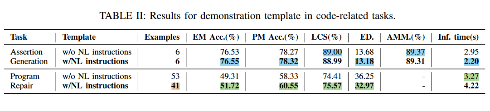

<!DOCTYPE html>
<html lang="en">
  <head>
    <meta charset="utf-8" />
    <meta name="viewport" content="width=device-width, initial-scale=1.0, maximum-scale=1.0, user-scalable=no" />

    <title>CEDAR</title>
    <link rel="shortcut icon" href="./favicon.ico" />
    <link rel="stylesheet" href="./dist/reset.css" />
    <link rel="stylesheet" href="./dist/reveal.css" />
    <link rel="stylesheet" href="./dist/theme/white.css" id="theme" />
    <link rel="stylesheet" href="./css/highlight/base16/zenburn.css" />


  </head>
  <body>
    <div class="reveal">
      <div class="slides"><section  data-markdown><script type="text/template">
<style type="text/css"> 
h1,h2,h3,p{ 
  text-align: left; 
}
h1.c,h2.c,h3.c{
  text-transform: capitalize;
}
h1.n,h2.n,h3.n{
  text-transform: none;
}
h3.small{
  font-size: 55px;
}
img{
  text-align:left;
}
img.center{
  display: block; /* This is important for margin:auto to work */
  margin-left: 100px;
}
img.fl{
  float:left;
}
img.logo{
  margin-top: -30px;
  margin-bottom: -10px;
  max-width: 20%; 
  height: 60px; 
}
div.sma{
  font-size:35px;
  margin:40px 10px;
}
p.right{
  text-align:right;
  margin-right:100px;
}
p.main{
  font-size:28px;
}
h2.center,h3.center{
  text-align:center;
}
img.tem{
  border-radius: 8pt;
  height:700px;
}
#outter{
  display:flex;
  justify-content: space-around;
}
#outter2{
  display:flex;
  justify-content: space-evenly;
}
#outter2{
  padding-bottom: 400px;
}
div.inner{
  display:flex;
  flex-direction: column;
  align-items:start;
  justify-content: space-evenly;
}
div.shell{
  margin-top: -100px;
  margin-left:70px;
}
#ref{
  margin-left:100px;
  margin-top: -100px;
}
#cat{
  display:flex;
  flex-direction: column;
  justify-content:center;
}
span.green{
  color: #609966;
}
</style> 

<div class="shell">
  <h2 class="n">Retrieval-Based Prompt Selection for </br>Code-Related Few-Shot Learning</h2>
  <br/>
  <div style="text-align:left">
  <ul>
      <li>Authors:&emsp;Noor Nashid,Mifta Sintaha,Ali Mesbah</li>
      <li>Published in:&emsp;ICSE'23 </li>
  </ul>
  <br/><br/>
  </div>
  <p class="right">汇报人：王小娅</p>
  <p class="right">汇报时间：2.28</p>
</div>


</script></section><section  data-markdown><script type="text/template">

<div class="shell">
  <h1>Outline</h1>
  <h2 class="n">1. Background</h2>
  <h2 class="n">2. Approach</h2>
  <h2 class="n">3. Evaluation</h2>
  <h2 class="n">4. Discussion</h2>
  <h2 class="n">5. Conclusion</h2>
</div>

</script></section><section ><section data-markdown><script type="text/template">

<div class="shell" style="padding:50px 50px">
  <div id="outter">
    <div class="inner">
    <div>
        <p>Software AnaLysis and Testing (SALT) lab<sup>[3]</sup></p>
      </br>
    </div>
    <div>
      
    </div>
    </div>
    <div class="inner">
      <div>
        
      </div>
      <div>
        
      </div>
    </div>
  </div>
</div>

</script></section><section data-markdown><script type="text/template">

<div class="shell" >
  <div id="outter">
  <div>

  *<p>Ali Mesbah<sup>[1][2]</sup></p>*
  </div>
  <div>
    
  </div>
  </div>
</div>

</script></section></section><section ><section data-markdown><script type="text/template">

<div class="shell">
<h1>1. Background</h1>
</div>


</script></section><section data-markdown><script type="text/template">

<div class="shell">
  <h2 class="c">Prompt-based few-shot learning<sup>[4]</sup></h2>
  <p>1. During <span class="green">in-context learning(icl)</span>, we give the LM a prompt that consists of a list of input-output pairs that demonstrate a task.</p>
  <p>2. At the end of the prompt, we append a test input and allow the LM to make a prediction.</p>
  
</div>  

</script></section><section data-markdown><script type="text/template">

<div class="shell">
  <h2 class="n">How to get demostrations for a well-created prompt?</h2>
  <h3 class="n small">1. Retriveal-based method<sup>[5]</sup></h3>
  <p style="font-size:32px">Estimate the probability of the output given the input and a candidate training example and label training examples as P/N, then train an efficient dense retriever from this data.(NAACL'22)</p>
  <h3 class="n small">2. Reinforcement learning method<sup>[6]</sup></h3>
  <p style="font-size:32px">Formulate example selection for in-context learning as a sequential decision problem, and propose a reinforcement learning algorithm for identifying generalizable policies.(EMNLP'22)</p>
  <h3 class="n small">3. Autoregressive model method<sup>[7]</sup></h3>
  <p style="font-size:32px">Generates demonstrations for in-context learning from PLM itself to minimize the reliance on the external demonstration(NAACL'22)</p></br>
  <p style="text-align:right"><a href="https://github.com/dqxiu/ICL_PaperList#influence-factors-for-icl">👉Paper List for In-context Learning</a></p>
</div>

</script></section></section><section ><section data-markdown><script type="text/template">

<div class="shell">
<h1>2. Approach</h1>
</div>

</script></section><section data-markdown><script type="text/template">

<div class="shell">
  <div id="outter" style="margin-top:50px">
    <div>
      <!-- <h3 class="n center">Overview of CEDAR</h2> -->
      
    </div>
    <div class="sma" style="margin-left:100px">
      <h3 class="n">Retrieval-based demonstration selection</h3>
      <p>Embedding(SRoBERTa)<sup>[8]</sup></p>
      <p class="main">Use the sentence transformer model to encode code snippets as vectors and calculate the cosine similarity</p>
      <p>Frequency(BM-25)<sup>[9]</sup></p>
      <p class="main">An extension of TF-IDF, to find demonstrations for each test sample with the most similar relevance score</p>
      <br/>
      <h3 class="n">Template selection</h3>
      <p>With or without natural instruction?</p>
    </div>
  </div>
</div>

</script></section><section data-markdown><script type="text/template">

<div style="margin-top:-100px">
  
  <br/>
  <div id="outter2">
    <div id="cat">
      <p>Prompt template for</br>code-related tasks</p>
      </br>
      <p>🎄 assertion generation</p>
      <p>🎄 program repair</p>
    </div>
    <div class="inner-div">
      
    </div>
    <div class="inner-div">
      
    </div>
  </div>
</div>

</script></section></section><section ><section data-markdown><script type="text/template">

<div class="shell">
<h1>3. Evaluation</h1>
</div>

</script></section><section data-markdown><script type="text/template">

<div class="shell">
<h3 class="n"><b>RQ1</b> - How effective is retrieval-based prompt creation? </h3><br/>
<h3 class="n"><b>RQ2</b> - How does CEDAR’s accuracy compare to state-of-the-art models? </h3><br/>
</div>

</script></section><section data-markdown><script type="text/template">

<div class="shell">
<h2 class="n center">Datasets</h2>
</br>
<h3 class="n">Assertion generation (ATLAS<sup>[10]</sup> Dataset)</h3>
<p>Each data point contains <span class="green">a focal method and a test method</span>. 8 types of assertion:</p>

```Java
assertEquals, assertTrue, assertNotNull, assertThat, assertNull, assertFalse, assertArrayEquals, assertSame.
```
<p>train:150,523 ➡ as the demonstration pool &emsp;&emsp; eval:18,815</p>
<h3 class="n">program repair (TFIX<sup>[11]</sup> Dataset)</h3>
<p>Each data point contains <span class="green">a buggy code snippet, and an error context from ESLint<sup>[12]</sup></span> that provides information about the error type, message, and warning line.</p>
<p>104,804 in total, 90% as the demonstration pool, 10% as the queries during inference.</p>

</div>

</script></section><section data-markdown><script type="text/template">

<div class="shell" style="margin-top:-150px">
  <h2 class="n center">Evaluation metrics</h2>
  <h3 class="n small"> Accuracy exact match (%)</h3>
  <p>The percentage of samples where the inferred output matches lexically with the expected output.</p>
  <h3 class="n small"> Accuracy plausible match (%)</h3>
  <p>The percentage of samples where the predicted output is similar to the expected output.</p>
  <h3 class="n small"> Longest Common Subsequence (LCS)<sup>[13]</sup></h3>
  <h3 class="n small"> Edit distance (ED.)</h3>
  <p>The number of edit operations(addition, deletion or modification) required for the inferred output to match the expected output.</p>
  <h3 class="n small"> Assertion method matched (AMM)</h3>
  <h3 class="n small"> Inference time</h3>
</div>

</script></section><section data-markdown><script type="text/template">

<div class="shell">
  <h2 class="n center">Baselines</h2>
  <h3 class="n">Random selection</h3>
  <p>Zero-shot : 0 code demostration </p>
  <p>One-shot : 1 code demostration </p>
  <p>N-shot - 1 example per category : N == 8 or N == 52</p>
  <p>N-shot : the perspectives of <span class="green">category and quantity</span></p>
  <h3 class="n">SOTA learning-based models</h3>
  <p>Assertion generation : ATLAS,Mastropaolo et al.<sup>[14][15]</sup></p>
  <p>Program repair : Hoppity,CoCoNuT,SequenceR,TFIX</p>
</div>

</script></section><section data-markdown><script type="text/template">

<div class="shell">
  <h2 class="n center">Results(RQ1-1)</h2>
  <br/>
  <div id="outter">
    <div class="inner">
      <p style="text-align:left">7 types of demonstration selection strategies</p>
      
    </div>
    <div class="inner" style="text-align:left">
      <div style="font-size:80%">1. In the random strategy, 8-shot and 60-shot work best respectively.(highlight)</div>
      <div style="font-size:80%">2. Frequency strategy yeilded best result in both tasks.</div>
      <div style="font-size:80%">3. Generating multi-line code fixes vs. single-line assertions.</div>
    </div>
  </div>
</div>

</script></section><section data-markdown><script type="text/template">

<div class="shell">
  <h2 class="n center">Results(RQ1-2)</h2>
      <div class="inner">
        <p style="text-align:left">Including and excluding natural language instructions</p>
        
        <p style="font-size:80%">1. The impact of NL instruction is negligible in the assertion generation.</p>
        <p style="font-size:80%">2. Including NL instruction brings an obvisous improvement in the program repair.</p>
        <p style="font-size:80%">3. CEDAR combines frequency-based retrieval and template with NL instruction by default. </p>
      </div>

</div>

</script></section><section data-markdown><script type="text/template">

<div class="shell">
  <h2 class="n center">Results(RQ2)</h2>
  </br>
  <div id="outter">
    <div class="inner">
      <p style="text-align:left">Compare CEDAR with SOTA learning based-models</p>
      
    </div>
    <div class="inner" style="font-size:80%">
      <div>1. CEDAR outperforms previous methods on both tasks, especially for assertion generation. </div>
      <div>2. CEDAR does not require any training or finetuning, thus it has better portability.</div>
      <div>3. The three types of models just correspond to the three generations of NLP training paradigms.</div>
    </div>
  </div>
</div>

</script></section></section><section ><section data-markdown><script type="text/template">

<div class="shell">
<h1>4. Discussion</h1>
</div>

</script></section><section data-markdown><script type="text/template">

<div class="shell">
  <div id="outter">
    <div class="inner">
      <h3 class="c">Quality over quantity as a key factor</h2>
      <p> 1. <span class="green">8-shot</span> works better than 20-shot in AG</p>
      <p> 2. Frequency has <span class="green">fewer</span> samples on average than embedding</p>
      <h3 class="c">Qualitative analysis of incorrect predictions</h2>
      <p> 1. (AG) <span class="green">Semantic-based</span> code clone detection techniques to capture </p>
      <p> 2. (PR) Too <span class="green">little</span> contextual info to generate a fix </p>
      <h3 class="c">Neural Coding Assistance Tool for Developers</h2>
      <p> 1. Within <span class="green">2-4 seconds</span> for each CEDAR minimal effort</p>
    </div>
    <div class="inner">
      
      
    </div>
  </div>
</div>

</script></section></section><section ><section data-markdown><script type="text/template">

<div class="shell">
<h1>5. Conclusion</h1>
</div>

</script></section><section data-markdown><script type="text/template">

<div class="shell">
  <h2 class="c">Strengths</h2>
  <p> 1. (Evalution)Diverse tasks and languages, representative and convincing baselines.</p>
  <p> 2. Excellent writing.</p>

  <h2 class="c">Weaknesses</h2>

  <p> 1. When comparing with the SOTA models(RQ2), only one metric of exact match acc is used.</p>
  <p> 2. Potential data leakage : the output is generated due to memorization.</p>

  <h2 class="c">Insights</h2>
  <p> 1. The more versatile, the more popular.</p>
  <p> 2. More influence factors for ICL could be explored.</p>
  <p> 3. If there is no demostration pool?</p>
</div>


</script></section></section><section  data-markdown><script type="text/template">

<div class="shell">
  <div id="ref">
  <h2 style="margin-left:35px">REFERENCES</h2>
    </br>
    <div id="outter">
      <div class="inner" style="align-items:flex-start">
        <div><a href="https://people.ece.ubc.ca/amesbah/">[1] Ali Mesbah UBC </a></div>
        <div><a href="https://scholar.google.ca/citations?hl=en&user=6CdatVEAAAAJ&view_op=list_works&sortby=pubdate">[2] Ali Mesbah Google Scholar </a></div>
        <div><a href="https://people.ece.ubc.ca/amesbah/">[3] SALT Lab </a></div>
        <div><a href="http://ai.stanford.edu/blog/understanding-incontext/">[4] How does in-context learning work? </a></div>
        <div><a href="https://arxiv.org/abs/2112.08633">[5] Learning To Retrieve Prompts for In-Context Learning</a></div>
        <div><a href="https://arxiv.org/abs/2211.04486">[6] Active Example Selection for In-Context Learning</a></div>
        <div><a href="https://arxiv.org/abs/2206.08082">[7] Self-Generated In-Context Learning</a></div>
        <div><a href="https://arxiv.org/abs/1908.10084">[8] Sentence-BERT</a></div>
      </div>
      <div class="inner" style="align-items:flex-start">
        <div><a href="https://www.staff.city.ac.uk/~sbrp622/papers/foundations_bm25_review.pdf">[9] BM-25</a></div>
        <div><a href="https://arxiv.org/abs/2002.05800">[10] ATLAS</a></div>
        <div><a href="https://proceedings.mlr.press/v139/berabi21a.html">[11] TFIX</a></div>
        <div><a href="https://eslint.org/">[12] ESLint</a></div>
        <div><a href="https://en.wikipedia.org/wiki/Longest_common_subsequence">[13] Definition of LCS</a></div>
        <div><a href="https://arxiv.org/abs/2102.02017">[14] Mastropaolo et al.</a></div>
        <div><a href="https://arxiv.org/abs/2206.08574">[15] Mastropaolo et al. again</a></div>
        <div><a href="https://github.com/prompt-learning/cedar">[16] CEDAR</a></div>
      </div>
    </div>
  </div>
</div>


</script></section><section  data-markdown><script type="text/template">

*<div><h1 class="n" style="text-align: center">Thanks</h1></div>*
<div><br/></div>
</script></section></div>
    </div>

    <script src="./dist/reveal.js"></script>

    <script src="./plugin/markdown/markdown.js"></script>
    <script src="./plugin/highlight/highlight.js"></script>
    <script src="./plugin/zoom/zoom.js"></script>
    <script src="./plugin/notes/notes.js"></script>
    <script src="./plugin/math/math.js"></script>
    <script>
      function extend() {
        var target = {};
        for (var i = 0; i < arguments.length; i++) {
          var source = arguments[i];
          for (var key in source) {
            if (source.hasOwnProperty(key)) {
              target[key] = source[key];
            }
          }
        }
        return target;
      }

      // default options to init reveal.js
      var defaultOptions = {
        controls: true,
        progress: true,
        history: true,
        center: true,
        transition: 'default', // none/fade/slide/convex/concave/zoom
        slideNumber: true,
        plugins: [
          RevealMarkdown,
          RevealHighlight,
          RevealZoom,
          RevealNotes,
          RevealMath
        ]
      };

      // options from URL query string
      var queryOptions = Reveal().getQueryHash() || {};

      var options = extend(defaultOptions, {"width":1780,"height":620,"margin":0.04,"progress":true,"transition":"slide","slideNumber":true}, queryOptions);
    </script>


    <script>
      Reveal.initialize(options);
    </script>
  </body>
</html>
